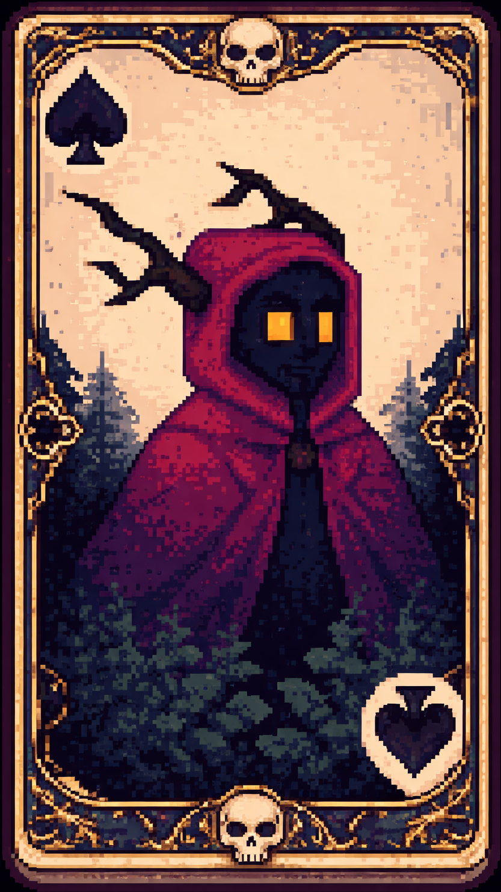
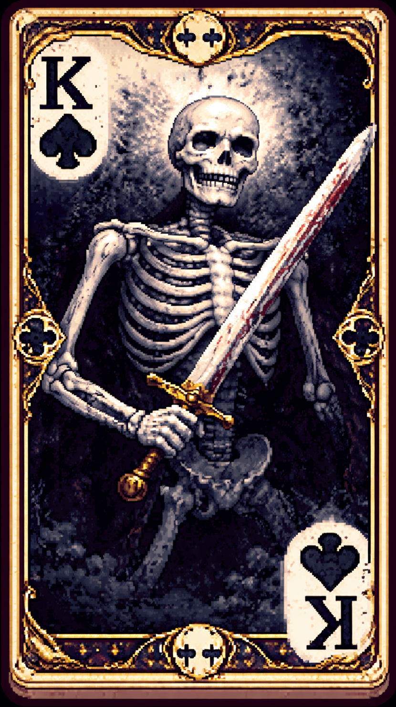

Uma silhueta sombria que caminha onde a luz teme entrar.
Sob um manto vermelho arrastado, seu rosto permanece oculto,
revelando apenas olhos laranja que brilham como brasas vivas.
Sua magia de fogo não nasce da lenha,
mas da própria escuridão que ele consome.
O calor que emana de suas mãos é capaz de derreter o aço
antes mesmo do combate começar.
Onde o Night Walker pisa, a escuridão se retira,
não por respeito, mas por medo de ser consumida.

Uma carcaça de ossos áridos que se recusa a descansar.
Sem carne, sem vontade e sem medo,
ele é o eco de um guerreiro que esqueceu o próprio nome.
Onde deveria haver um rosto,
existe apenas o vazio de um crânio envelhecido.
Empunhando uma espada pesada e manchada pelo tempo,
move-se com precisão mortal.
Não respira. Não hesita.
É o carrasco silencioso que protege a escuridão.